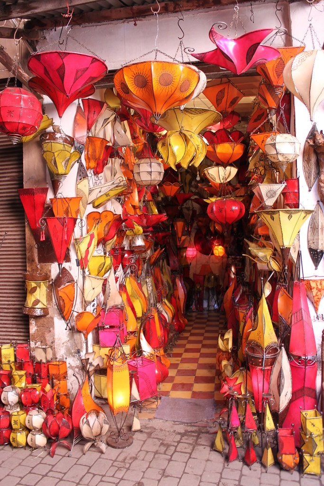
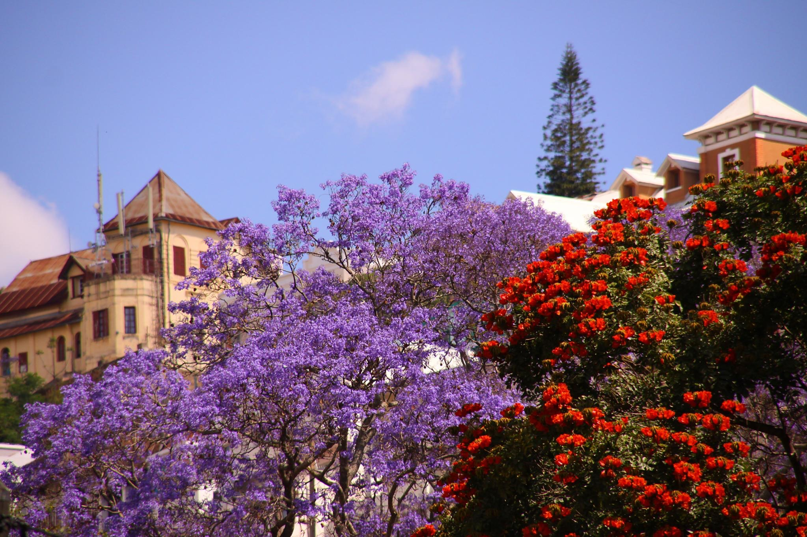
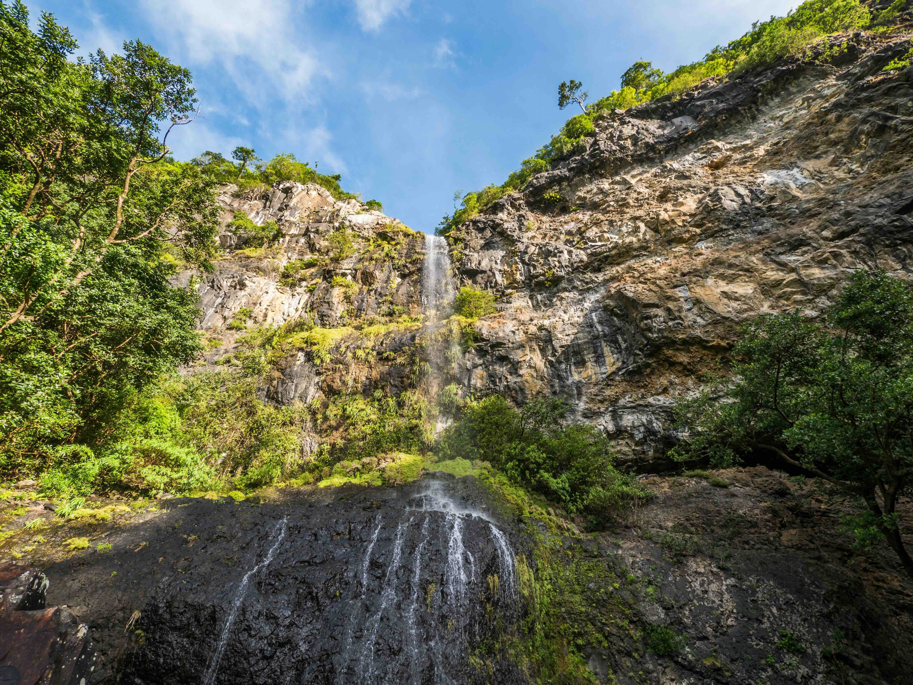

Africa
Where humanity began, and adventure never ends

The Serengeti National Park is a vast wilderness area in Tanzania, known for its incredible biodiversity and the Great Migration of wildebeest and zebra. The park is home to the Big Five—lion, leopard, elephant, buffalo, and rhinoceros—and offers visitors a chance to witness some of the most spectacular wildlife encounters in the world.
🎯 Things to do:
- Go on a safari drive
- Watch the Great Migration
- Spot lions and elephants
- Take a hot air balloon ride
- Photography tours
- Visit Maasai villages

Victoria Falls
📍 Location: Zambia/Zimbabwe
🌤️ Best Months: June - October
Victoria Falls is one of the largest and most powerful waterfalls in the world. In winter, water levels drop slightly, giving clearer views of the rock formations and the entire waterfall. Visitors can enjoy scenic viewpoints, adventure activities, and stunning rainbows formed by the mist.
🎯 Things to do:
- Walk along the viewpoints
- Helicopter tours
- Bungee jumping
- river rafting
- Sunset cruise
- Photography

Sahara Desert
📍 Location: North Africa
🌤️ Best Months: November - February
The Sahara Desert is the largest hot desert in the world, known for its vast golden dunes and endless horizons. Winter offers cooler temperatures, making it ideal for exploring. Visitors can ride camels, camp under the stars, and experience traditional desert culture in a unique environment.
🎯 Things to do:
- Ride a camel
- Camp under the stars
- Experience desert culture
- Sandboarding
- Visit Berber camps
- Sunset photography

Masai Mara National Reserve
📍 Location: Kenya
🌤️ Best Months: July - October
The Masai Mara National Reserve is a vast savannah ecosystem known for its abundant wildlife and the Great Migration. Winter offers excellent game viewing opportunities as animals congregate around water sources. Visitors can enjoy guided safaris, hot air balloon rides, and cultural experiences with the Maasai people.
🎯 Things to do:
- Go on a safari drive
- Wildlife spotting
- Cultural visits
- Hot air balloon rides
- Guided tours
- Photography

Cape Town
📍 Location: Western Cape, South Africa
🌤️ Best Months: December - February
Cape Town is a vibrant coastal city with stunning natural beauty. In summer, visitors enjoy sunny beaches, Table Mountain views, and lively culture. The city blends urban life with outdoor adventures, offering everything from hiking to waterfront dining and scenic drives along the coastline.
🎯 Things to do:
- Climb Table Mountain
- Visit beaches
- Explore V&A Waterfront
- Coastal drives
- Hiking
- Wine tasting

Zanzibar
📍 Location: Tanzania
🌤️ Best Months: June - October
Zanzibar is a tropical island paradise with white sand beaches and crystal-clear waters. Summer brings warm weather perfect for swimming and snorkeling. The island also offers rich history in Stone Town, spice tours, and a relaxed atmosphere ideal for both adventure and relaxation.
🎯 Things to do:
- Snorkeling
- Beach relaxing
- Visit Stone Town
- Spice tours
- Boat trips
- Diving

Kruger National Park
📍 Location: South Africa
🌤️ Best Months: May - September
Kruger National Park is one of Africa's largest game reserves, known for its diverse wildlife and scenic landscapes. In summer, the weather is warm and dry, making it an ideal time for game drives and wildlife viewing. The park offers various accommodation options and guided tours for an immersive safari experience.
🎯 Things to do:
- Safari drives
- Wildlife spotting
- Guided tours
- Photography
- Night Safaris
- Spot Big Five

Seychelles
📍 Location: Seychelles
🌤️ Best Months: April - May, October - November
Seychelles is a tropical archipelago known for its pristine beaches and crystal-clear waters. In summer, the weather is warm and humid, perfect for water activities and beach relaxation. The islands offer unique wildlife, including the endemic Seychelles giant tortoise, and a rich cultural heritage.
🎯 Things to do:
- Snorkeling
- Beach relaxing
- Island hopping
- Diving
- Nature walks
- Boat tours

Okavango Delta
📍 Location: Botswana
🌤️ Best Months: May - September
The Okavango Delta is a unique inland delta filled with waterways and wildlife. In autumn, floodwaters begin to arrive, transforming the landscape into a lush oasis. Visitors can explore by canoe, spotting animals like hippos and elephants in a peaceful, water-filled environment.
🎯 Things to do:
- Canoe safaris
- Wildlife spotting
- Birdwatching
- Photography
- Guided tours
- Scenic flights

Namib Desert
📍 Location: Namibia
🌤️ Best Months: May - October
The Namib Desert is one of the oldest deserts in the world, famous for its towering red sand dunes. Autumn provides comfortable weather for exploring. The surreal landscapes, especially Deadvlei, offer stunning views and unique photographic opportunities unlike anywhere else on Earth.
🎯 Things to do:
- Climb dunes
- Visit Deadvlei
- Photography
- Scenic flights
- Desert tours
- Sunrise watching

Marrakech
📍 Location: Morocco
🌤️ Best Months: March – May, September – November
Marrakech is a vibrant city filled with markets, palaces, and gardens. Autumn offers comfortable temperatures for exploring the busy medina and historic sites. Visitors can experience Moroccan culture through food, architecture, and lively street scenes in this colorful destination.
🎯 Things to do:
- Explore souks
- Visit palaces
- Try Moroccan food
- Garden tours
- Cultural shows
- Shopping

Chobe National Park
📍 Location: Botswana
🌤️ Best Months: May - October
Chobe National Park is home to a diverse range of wildlife, including large herds of elephants. In autumn, the park is less crowded, making it an ideal time for game drives and wildlife photography. The Chobe River provides a scenic backdrop for these adventures.
🎯 Things to do:
- Game drives
- Wildlife photography
- Boat tours
- Nature walks
- Hiking
- Picnics

Cape Floral Region
📍 Location: Western Cape, South Africa
🌤️ Best Months: August – October
The Cape Floral Region is famous for its incredible biodiversity and wildflower displays. In spring, fields burst into color with blooming flowers. It’s one of the best natural spectacles in the world, attracting visitors who enjoy scenic drives and photography.
🎯 Things to do:
- Flower viewing
- Scenic drives
- Photography
- Nature walks
- Hiking
- Picnics

Madagascar
📍 Location: Madagascar
🌤️ Best Months: April – November
Madagascar is a unique island known for its rare wildlife and ecosystems. Spring is a great time to explore its rainforests and national parks. Visitors can see lemurs, baobab trees, and diverse landscapes that exist nowhere else in the world.
🎯 Things to do:
- Wildlife spotting
- Visit national parks
- Forest hikes
- Photography
- Explore baobab trees
- Guided tours
Victoria Falls
📍 Location: South Africa
🌤️ Best Months: February - May
In spring, Victoria Falls reaches peak water flow, creating a powerful and dramatic sight. The intense spray forms rainbows and mist clouds visible from afar. It’s one of the most impressive natural wonders, offering unforgettable views and thrilling experiences.
🎯 Things to do:
- View waterfalls
- Photography
- Helicopter ride
- Walking trails
- Boat cruises
- Adventure sports

Mauritius
📍 Location: Mauritius
🌤️ Best Months: May – November
Mauritius is a beautiful island with beaches, lagoons, and mountains. Spring offers pleasant weather and blooming nature. Visitors can relax on beaches or explore inland landscapes.
🎯 Things to do:
- Beach relaxing
- Snorkeling
- Hiking
- Boat trips
- Water sports
- Sightseeing

Mount Kilimanjaro
📍 Location: Tanzania
🌤️ Best Months: January – March, June – October
Mount Kilimanjaro is the highest peak in Africa and a popular destination for hikers. Spring is an ideal time to climb, with mild weather and fewer crowds. The mountain offers diverse ecosystems and stunning views from its summit.
🎯 Things to do:
- Trekking
- Summit climb
- Photography
- Wildlife spotting
- Camping
- Guided tours

Mount Kenya
📍 Location: Kenya
🌤️ Best Months: January – March, July – October
Mount Kenya is the second-highest peak in Africa and a popular destination for hikers. Spring is an ideal time to climb, with mild weather and fewer crowds. The mountain offers diverse ecosystems and stunning views from its summit.
🎯 Things to do:
- Hiking
- Summit climb
- Photography
- Wildlife spotting
- Camping
- Guided tours

Atlas Mountains
📍 Location: Morocco
🌤️ Best Months: March – May, September – November
The Atlas Mountains are a mountain range in the Maghreb region of North Africa. Spring offers pleasant weather and blooming nature. Visitors can explore the diverse landscapes and experience the rich culture of the region.
🎯 Things to do:
- Beach relaxing
- Trekking
- Cultural visits
- Photography
- Camping
- Hiking

Drakensberg Mountains
📍 Location: South Africa
🌤️ Best Months: April – October
The Drakensberg Mountains are a mountain range in South Africa. Spring offers pleasant weather and blooming nature. Visitors can explore the diverse landscapes and experience the rich culture of the region.
🎯 Things to do:
- Hiking
- Photography
- Camping
- Rock Art
- Waterfalls
- Exploring